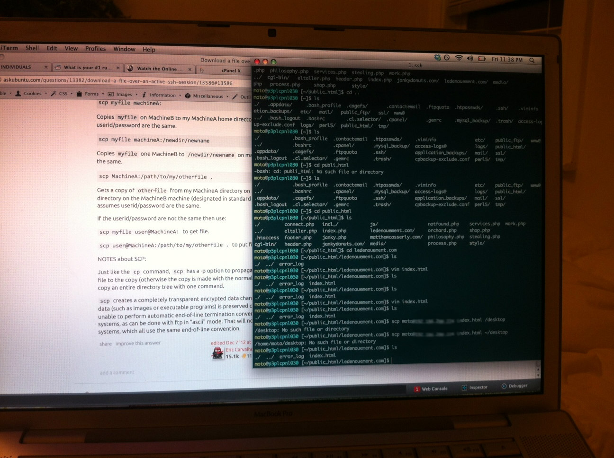
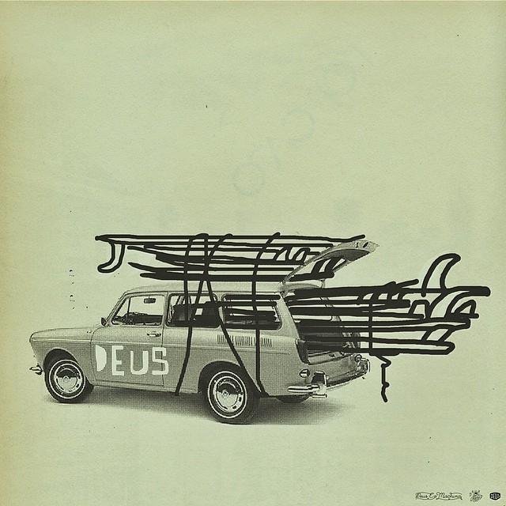

Vim Tips
I really like simplicity. It is made all the better when simplicity and functionality exist together. Not something you find too often in the wild.
Only a few months ago I found myself floundering when trying to do anything productive in my text editor. I was using Vim because I had read some really great reviews expounding its usefulness. It was configurable, shipped with every mac, and could even be used when working on remote servers. Not to mention the fact that it looked liked proper hacking when working through the command line. I was sold. The only problem was I didn't know how to actually use it. How do you save a file? How do you open a new file? How do you copy and paste? These are all relatively simple things. Kind of important things really and I was beginning to feel stupid especially considering the fact that I already knew how to do these very things in a normal editor, or Word for that matter.
Progress. Slow steady progress.
I started watching a lot of youtube tutorials. I also read a few blog posts regarding Vim tips and tricks and I learned the very basic commands. Like "y" for yank (copy) and "p" for put (paste). I learned just enough so that I could write some code. Actually get things done. I also happened upon a great post, which I can't remember at the moment which essentially detailed the necessary steps to progressing with Vim. It essentially boiled down to a decision to continuously use Vim and to write down things that annoyed you while working. Like how to delete the text between two html tags. Something which has been bothering me for weeks. I finally got so annoyed that I did not know how to do this that I stopped working, and spent 5 minutes Googling the answer. Sure enough the answer is extremely simple and will surely save me countless hours of frustration in the future.
// dit "delete inside tags"
p This is some text p
// To delete between these two tags place cursor
// anywhere inside the tags and type "dit"
// You can also use cit "change in tags" which allows
// you to immmediately write afterwords
// BOOM
// Also ci" which will allow you to change the text
// inside quotes
Accessibility in the modern age
I have been watching a lot of lectures and talks on JavaScript, Linux, open sourcing code and the like. Surprisingly I am starting to understand more of what is being discussed and referred to. Most of the talks are rather abstract or broad. They are not particularly trying to teach you any special languages. They certainly are not tutorials. In fact the whole discussion is based around the fact that you already know and use a certain programming language. So why bother watching them if I am not learning language syntax or real world code examples?
A few reasons really. I think the primary reason that draws me to these talks is trying to understand the context of language uses. To understand the inner workings of the industry as well as use cases that I might not even know of yet. I don't quite know ruby but I still find it interesting to listen to someone rant about their workflow or specific issues they have run into.
A second and slightly more enthralling reason is that web industry is still relatively new. Technologies are ever evolving and new methods are constantly being developed and adopted. With this youth we are given a great opportunity to watch and learn from the industry leaders. The very people who are developing new tools that we might be using on a day to day basis.
Most of the authors who I admire are no longer with us. I can't send an email or a tweet to Jack Kerouac. Not that I would want to as that might remove the mysticism which elevates his status. Nevertheless it is quite cool that the dude's who created bootstrap or node.js are only 140 characters away.
Indie techno leads to productivity
James had some good tunes flowing in through his ear holes. His head was bouncing in a rhythmic fashion listening to a boisterous amalgamation of indie techno. It was an NPR recommended album which he had picked up months prior and just now resurrected in hopes that it might spur on creative endeavors. Force the manifestation of physical action. So far nothing was happening. He continued to sit.
Secure Copy is cooler than FTP
Studying, researching, mostly googling. Lot's and lot's of googling. There are a few things I remember reading about a few months ago that just seemed so completely foreign. Terminology that lacked any coherent meaning. Granted there are still a few things, well actually, many, many things that pass right over my head, however, I did just figure out one thing which I had seen mentioned quite a few times but never took the time to learn, SSH.
You may have no idea what that refers to. That is ok. Neither did I until just a few minutes ago. What it essential entails is creating a secure connection between one's own computer via the terminal and a remote hosted server. Long story short it enables one to directly edit the files that are used to create a webpage, such as this very page you are reading. In fact I am currently typing this in the terminal while connected to my own site using a text editor called ViM. This is certainly not a best practice. It is not usually a good idea to directly edit a live webpage without testing, lest you the reader be confronted with an improperly formatted site.
For such a momentous occasion, however, I think it worth the while. We've all got to celebrate the small victories somehow.
Sidenote: I also just figured out how to move files between local and remote machines. Something to keep handy.
//scp (secure copy) FROM TO
scp ~/desktop/example.jpg user@website.com /path/to/place/fileRad.
Javascript in the form of pizza
I am currently studying JavaScript. Trying to progress in the land of web development. Most of the tutorials or books I have happened upon have been extremely informative but a little dry. That is until ..
// Imagine I had a pizza
var myPizza = {slices: 5};
// And I shared it with You
var yourPizza = myPizza;
// I eat another slice
myPizza.slices = myPizza.slices - 1;
var numberOfSlicesLeft = yourPizza.slices;
// Now We have 4 slices because myPizza and yourPizza
// reference to the same pizza object.Now that is some education I can get behind. Pizzacation.
source: www.anotheruiguy.com
Visual Inspiration
source: internet (not mine)
Outside sources.txt
"We must do away with the absolutely specious notion that everybody has to earn a living. It is a fact today that one in ten thousand of us can make a technological breakthrough capable of supporting all the rest. The youth of today are absolutely right in recognizing this nonsense of earning a living. We keep inventing jobs because of this false idea that everybody has to be employed at some kind of drudgery because, according to Malthusian-Darwinian theory, he must justify his right to exist. So we have inspectors of inspectors and people making instruments for inspectors to inspect inspectors. The true business of people should be to go back to school and think about whatever it was they were thinking about before somebody came along and told them they had to earn a living."
—Buckminster Fuller, New York Magazine, 1970
source: blog.hellohappy.org
Tales of development: 02
Honestly he had no idea they existed in the wild. A traveling salesman incongruously dressed as a man of business.
The salesman walked in the doorway to the office with his Costanza wallet bulging in the right front pocket of his worn corduroy pants. An unkempt and ill groomed bespectacled face rising up out of his roomy and stained white dress shirt. The shirt being held aloft by an outdated and boxy tie.
In one hand he fumbled with a smudged Ipad and carried a overflowing briefcase in the other.
James reckoned the salesman awoke each morning more frazzled than the last. His life an ever continuous deluge of halfhearted attempts to do something. Anything.
"Did the email come through? I just sent it"
"Not that I can see.."
James first met him during a sales pitch. Only, he was not even the one giving the presentation, he was simply there. A physical being present and real. He was to instruct whomever to log into a web portal where another "inside guy" would provide all of the relevant information. A distant voice somewhere in lower Manhattan.
The pitch, awash in buzzwords lacked any real substance and was in no way in congruence with the modest needs and desires originally put forth. The salesman and his compartriot were technologists of the lowest order. Simply out to make a quick buck.
Current Reading List: 2014
- Bourdain, Antony. Kitchen Confidential. New York: Harper Collins, 2000. Print
- Conn, Iggulden. Emperor: The Gates of Rome. New York: Harper, 2011. Print
- Conn, Iggulden. Emperor: The Death of Kings. New York: Harper, 2011. Print
- Fitzgerald, F. Scott. This Side of Paradise. New York: Charles Scribner's and Sons, 1920. Print.
- Fitzgerald, F. Scott. The Beautiful and the Damned. New York, Charles Scribner's and Sons, 1922. Print
- King, Stephen. On Writing: A Memoir of the Craft. New York: Scribner, 2000. Print
- Melville, Herman. Bartleby the Scrivener. Brooklyn, NY: Melville House Publishing, 1853. Print.
- Oe, Kenzaburo. Nip the Buds, Shoot the Kids. New York, NY: Grove Press, 1995. Print.
- Steinbeck, John. East of Eden. New York: Viking Press, 1952. Print
- Vizzini, Ned. It's Kind of a Funny Story. New York: Hyperion, 2006 . Print
- Warren, Robert Penn. All the King's Men. New York: Harcourt, Brace and Company, 1946. Print
More better reading
A good friend of mine from high school introduced me to what he called at the time The Summer of Literature. It was a self-induced effort on his part to read more and better material. Literature. It's no wonder he would later became an english teacher.
I've always considered myself an avid reader. I read all of the Lord of the Rings including the Hobbit before high school, I finished each Harry Potter book within a few days of its release, and I can still recall some of the plots to the various Hardy Boys I managed to get my hands on.
I liked to read. However, I had never intentionally made a concerted effort to read any classics. That is, until The Summer of Literature. My friend would let me borrow whatever book he had just finished. From 1984 to Catch 22. We read a lot.
He even finished War and Peace, a feat I so ungraciously chose not to pursue. Although a copy does sit on my bookshelf today. Glaring at me.
At some point in the last year or so I realized I had fallen into my old ways. I was still reading, just nothing great. After a conversation with my sister about this exact topic I came to the conclusion that I should once again curate the books I delved into. I wanted to read better material. Novels, classics, and historical non-fiction.
Spinning wheels
I wasn't always a morning person. In truth, I've never been a morning person. That said, I have come to the realization that some of the best things in life are accomplished far too early to be deemed acceptable.
When I was racing bicycles it was quite common to be up at five in the morning drinking coffee and stuffing my face full of whatever calories I could find in an effort to fuel and sustain myself on a four hour bike ride.
I'm not riding my bike nearly as much as I used to. My bicycle sits unloved in the corner of my garage with a rear flat tire and a drive-train no longer willing to propel me forward even at the urgency of my legs.
I rode my bike so much that people think it strange for me to have neglected it for so long. What they don't know is that I have found another avenue to feed my endorphin addiction. For that is really all I was after. I have discovered that the more often I run, the more comfortable I am, and the closer I get to that mysterious high only achieved through self exertion and a slight discomfort throughout the body.
appendage - as of uploading this - I am quite keen to be riding my bike again. Running has become comfortable and at times enjoyable, however, cycling has deep seeded roots that are re-surfacing. I think it's time to drag my bicycle out of the corner in which it sits.
Tales of development: 01
He spent the afternoon hyped up on caffeine and a nervous excited energy. Unable to remain focused he day dreamed of productivity and finished products. Every once in a short while though, as if like a bolt of lightning striking down he would be swept up in a tidal wave of optimism.
Hours, days, weeks, having been spent fretting over simple problems and inconsistent techniques until finally an answer emerged. It seemed so evident it almost made him angry for not having realized earlier. Nevertheless the answer was there and better to move on and accept the fact than worry over wasted time.
Then, somewhere in his productive bliss an errant click would lead him astray. Click by unregistered click he would find himself miles away from his intended destination. Unable to reconcile the time lost or his immediate intended purpose he would fret. The cycle would begin anew. Distraught dissatisfaction over what could have been and a constant pang of fear that he did not have the guile to see his lofty goals through to the end.
Suddenly without warning the clock struck midnight. Productivity having given way to music videos and repetitive click-bait content, he became just another unrealized procrastinating wanderer of the web.
"Concentrate James, concentrate!"
Any time wasted did not need to lead to further turmoil and angst. Self-discipline required a constant fresh perspective and here he was with a wonderful opportunity. The silence of the night laid out before him with not a single wisp of interruption. All it ever really took was a slightly focused few moments of concentration before he was once again enraptured in a battle of semicolons and haphazard div tags in his quest to produce.